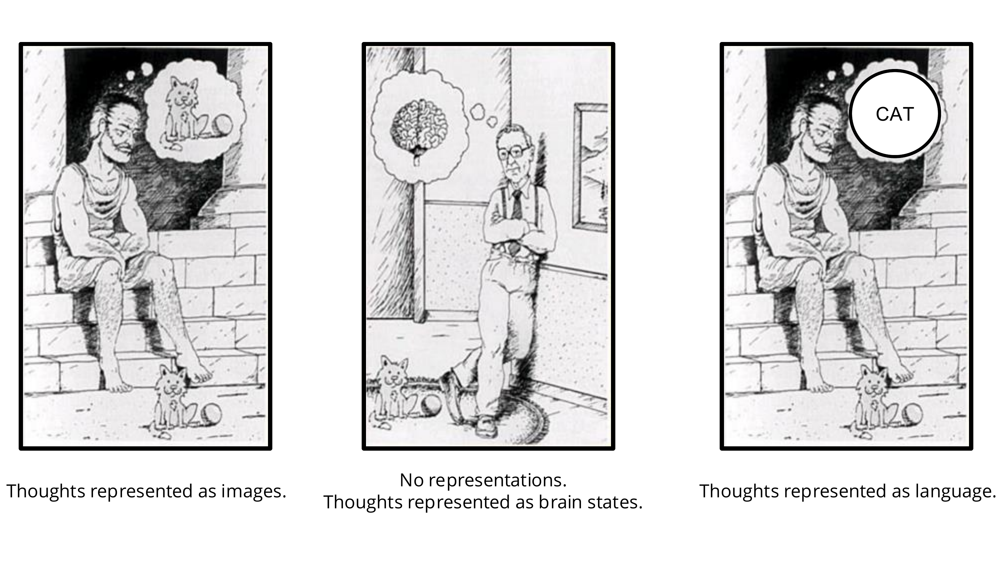
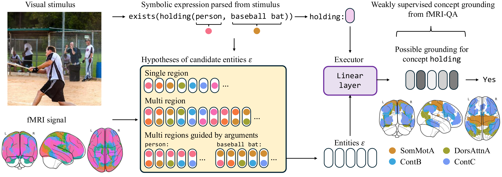
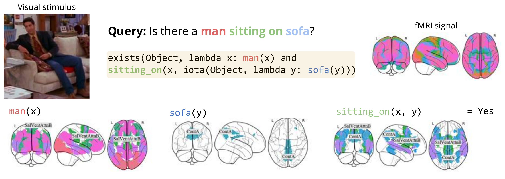
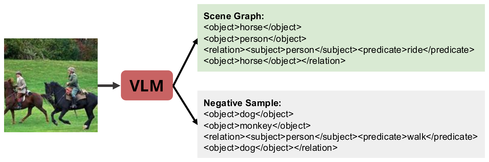
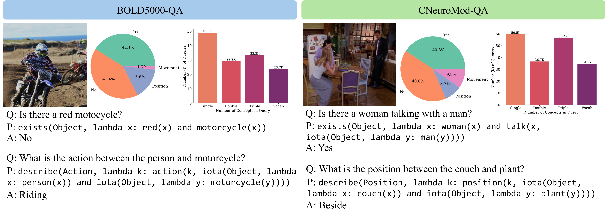
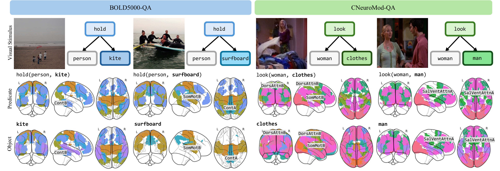

We propose NEURONA, a neuro-symbolic framework for fMRI decoding and concept grounding in neural activity. Leveraging image- and video-based fMRI question-answering datasets, NEURONA learns to decode interacting concepts from visual stimuli based on patterns of fMRI responses, integrating symbolic reasoning and compositional execution with fMRI grounding across brain regions. We demonstrate that incorporating structural priors (e.g., compositional predicate-argument dependencies between concepts) into the decoding process significantly improves both decoding accuracy over precise queries, and notably, generalization to unseen queries at test time. With NEURONA, we highlight neuro-symbolic frameworks as promising tools for understanding neural activity.
Introduces BOLD5000-QA and CNeuroMod-QA for compositional semantic concept decoding from brain activity.
Integrates symbolic reasoning with neural grounding modules to decode compositional concepts from fMRI activity.
Robust generalization to unseen compositional queries at test time, while prior methods fall to near-chance levels.
The Language of Thought hypothesis proposes that cognition operates over structured, compositional representations. We study whether modeling such structure can improve neural decoding from fMRI — predicting semantic content from brain activity.

The Language of Thought hypothesis: cognition operates over compositional, structured representations.
Core question: How can we decode relational meaning — interactions between visual concepts and the relations binding them — from neural responses? Existing approaches fall short:
Key insight: Incorporating predicate-argument dependencies as structural priors significantly improves both neural decoding accuracy and generalization.
NEURONA is a neuro-symbolic framework that integrates symbolic reasoning with fMRI concept grounding. Each query is parsed into a symbolic expression, and brain activity is routed through learned concept modules to produce an answer, trained through answer supervision alone.
Each query (e.g., "Is there a person holding a baseball bat?") is parsed into a symbolic expression with predicate-argument structure.
Voxel-level fMRI signals are parcellated into functional networks using a standard atlas (e.g., Yeo-17), yielding parcel embeddings as candidates for concept grounding.
Each concept is grounded to brain parcels via learned modules. We test structural hypotheses, progressively adding guidance; full argument-guided grounding is best.
Grounded scores are composed according to the symbolic expression to produce a final answer, trained end-to-end with only answer supervision.

System overview. NEURONA parses each query into a symbolic expression and maps the accompanying fMRI recording into candidate parcel-level embeddings. It grounds concepts to these parcels with learned linear concept modules, optionally guided by predicate-argument structure, and composes grounded scores to answer the question. Only final answers supervise training.

Grounding example. Concepts are scored over brain parcels and composed via argument-guided aggregation to answer the query.
We construct two fMRI-QA benchmarks by extracting scene graphs from visual stimuli, then converting them into structured QA examples, paired with corresponding fMRI recordings.

Benchmark construction. Scene graphs from visual stimuli are extracted via a VLM and converted into fMRI-QA pairs with positive and negative samples.
Natural images, 4 subjects; 133K training / 2K test QA examples spanning entities, actions, and positions.
Videos from Friends episodes, 3 subjects; 157K training / 30K test QA examples with diverse compositional queries.

Dataset overview. Example queries and distribution overviews for BOLD5000-QA and CNeuroMod-QA; both datasets span diverse queries and tasks.
We evaluate on fully disjoint train/test splits with no overlapping entity-relation combinations. NEURONA achieves a 47% relative improvement over the strongest baseline, with large gains on relational queries (Action, Position). Prior methods degrade to near-chance while NEURONA retains strong performance.
We test structural hypotheses, progressively adding guidance for grounding. Full argument-guided grounding yields the best performance; multi-region grounding alone does not help — structural guidance is the key.

Concept grounding. The same predicate (e.g., hold) grounds to different brain regions depending on its arguments — hold(person, kite) relies on Control B, while hold(person, surfboard) uses Somatomotor B and Control A. Groundings extend beyond visual areas into motor and prefrontal networks.
@inproceedings{wang2026neurona,
title={Neuro-Symbolic Decoding of Neural Activity},
author={Wang, Yanchen and Hsu, Joy and Adeli, Ehsan and Wu, Jiajun},
booktitle={International Conference on Learning Representations (ICLR)},
year={2026}
}